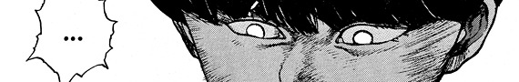
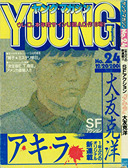
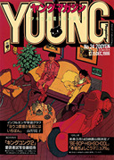
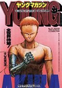
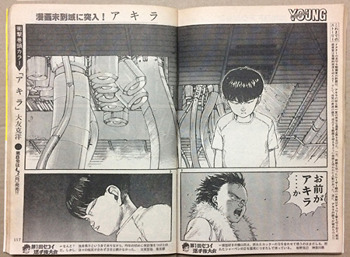
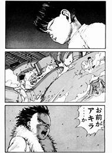
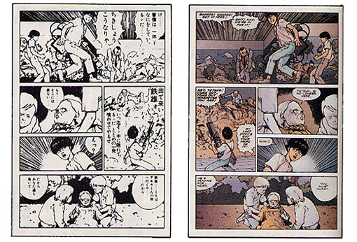
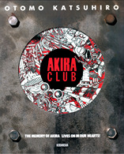

MAKING AKIRA • AKIRA'S LEGACY • WHAT AKIRA MEANS TO ME
MY AKIRA COLLECTION
At 2:17 P.M. on December 6th, 1982, a new type of bomb exploded over the metropolitan area of Japan...
AKIRA is a seinen manga written and illustrated by Katsuhiro Otomo.Who? It's also known as Akira and アキラ. The series is science fiction, political thriller, post-apocalyptic, and action. AKIRA was serialized biweekly in Kodansha's YOUNG Magazine from December 6, 1982 to June 25, 1990. All 120 episodes (or parts) have been compiled into six tankōbon volumes with many international variations.
During serialization, AKIRA's ongoing story was adapted into an animated film in 1988. The film was directed by Otomo himself.
The manga takes place in a cyberpunk, post-apocalyptic 2019 Japan. Thirty-eight years after a new "bomb" exploded over Tokyo and triggered World War III, biker gangs and government ineptitude run the city of Neo-Tokyo. What AKIRA is goes way beyond anti-government groups and gang fights. Psychic powers, government experiements, and explosive SF action as well as emotion. It's about a relationship, losing balance, humanity--all these interpersonal things set in the backdrop of Neo-Tokyo.
AKIRA is my favorite series ever. It came into my life April 2021 when I first watched the movie. It's not just a "cool story with cool art" to me but I explain more in the last section. I think AKIRA really is the best story ever written. Not a day goes by where I don't think about it. It'll stay with me forever. I have a collection with art books, figures, trading cards, all kinds of stuff. I've been collecting since 2021.
If you wanna read about each volume, click here. These pages only have very basic information. They're mostly personal thoughts and some favorite panels. I'm not holding your hand and telling you everything that happens because I'd rather you just READ the manga. Spoiler warning, discretion advised--I talk about sexual assault in Volume 4.
MAKING AKIRA

As I said, AKIRA started in 1982 on December 6th and ended in 1990 on June 25th. Eight years, 120 episodes. A feature film halfway through publication. During that time Otomo and his assistants worked hard to create AKIRA.

The logo for YOUNG, the magazine AKIRA was serialized in
Before working on AKIRA Otomo had published various short stories and garnered some interest in his work. For a while Kodansha wanted Otomo to create a series for their YOUNG Magazine but he was busy working with other publishers at the time. Domu's (1980) success and Fire-Ball (1979) preceding both--rushed with an ending he was dissatisfied with--set the stage for Otomo to do AKIRA. On December 6th, a new kind of SF began to stir. This is the longest work Otomo has ever done to date.
Otomo and his team worked on a biweekly schedule, meaning that he had two weeks to complete ~20 pages for the next episode. Otomo also had to complete every title page for every episode. Some episodes he opened with painted pages instead of regularly illustrated panels.
  
All the YOUNG issue covers by Otomo. L to R: part 1, part 82, part 88, part 111
At times during AKIRA's serialization Kodansha wanted to update the schedule so new episodes came out weekly. This was due to the demand for and rising popularity of AKIRA. Otomo refused and he stuck to the biweekly schedule. There's two times serialization for AKIRA broke this schedule. That was from April 1987 til late 1988, for the movie, and another time when Otomo had to recover from illness.
For a while AKIRA was only a hit in Japan. AKIRA took the audience of YOUNG by storm enough that Otomo began to collect his work into volumes. He did this while serializing. This meant that Otomo had to edit much of the art and layouts to better fit the flow of a collected version of AKIRA. He updated old art, redrew entire panels, created new pages, and cut-pasted panels and pages as he saw fit.
The first volume of AKIRA crushed expectations and by the time Otomo was approached to turn AKIRA into animation, there were four volumes in print and over two million copies sold. AKIRA was everywhere. The movie was a huge success domestically. All this noise about "Akira! Akira! Akira!" drew attention from overseas.
 
Example of the kind of work Otomo did for the volumes. This makes YOUNG issues valuable to collectors since they have art not seen outside of Japan.
The westernization of AKIRA was an extensive process. It was picked up by Epic Comics editor-in-chief, Archie Goodwin. He worked with Kodansha staff to get AKIRA overseas. This process involved flipping pages so they read left to right; Otomo and his assistants had to go back and edit his work just to replace the original balloons with new art and make AKIRA work in this new format.
Original onomatopoeia were erased and English sound effects added in, vertical balloons erased and horizontal reading ones added, lettering redone. Even the translations created a different sense of character and world. In this, AKIRA became a new story for American audiences.

What AKIRA looked like for the 90s American audience
AKIRA arrived to the USA in full digitized color. This was first manga ever colored digitally. Steve Oliff--with Otomo's approval through the use of color guides--overlooked the colorization at Olyoptics. This was an extensive process that had to go through a lot of steps. Proofs were put in a scanner and when the color was added digitally that information was put on floppy disks and sent to another company to produce the film. AKIRA was basically colored in layers to form the complete image.
Personally I'll always dislike the westernization of AKIRA. This process was supposed to make it understandable to a crowd who read comics in a certain way but that meant AKIRA lost something in the process. AKIRA became the first in some things which is cool. I know without all that work there's a chance AKIRA might've never gotten dedicated fans in the US. The work was impressive but I don't have to like what AKIRA got turned into for it...
 AKIRA finished in 1990. From the point it began serializing that makes it almost 43 years old at the time of me making this page. While the movie has a few art books and supplementary materials, AKIRA Club is the definitive artbook for the manga. It collects every title page produced for every episode, concepts, advertising design, unused art, and more. This book was published in 1995. It's where "The memory of AKIRA lives on in our hearts!" comes from. It's one of my favorite AKIRA books that isn't just the manga.
Making AKIRA... Now?
AKIRA is being released again through Otomo: The Complete Works. This version of AKIRA aims to recreate it as it was in YOUNG. Title pages and everything. As much original art as possible. These releases are divided into years so "AKIRA 1" isn't actually the entirety of Volume 1... it's AKIRA from 1982-1983. "AKIRA 2," just released, is both the end of Volume 1 and a majority of 2. That's 1983-1984. This means by the end the Complete Works version of AKIRA should be 8 volumes long.
There's also an animated series in production at Sunrise that was announced in 2019 with no real updates since. It's supposed to be a faithful adaptation of the manga in its entirety.
AKIRA'S LEGACY
Do you like anime and manga? Do you live in the West? You should be thanking AKIRA that all that's so popular in the first place. AKIRA and the efforts to westernize it for overseas audiences is one of the main reasons you can read My Hero Academia on your lunch break.
Without the comic or the movie adaptation, animanga probably would've taken longer to get big here. Or stayed this niche thing only sweaty dorks are into or whatever. Now everyone you know has a favorite mainstream show they never shut up about. AKIRA will go down in history as the series that made animanga big outside of Japan. I know it had interest before but AKIRA shattered everything that came before it.
The film endures as a pillar of animation and I think I've already talked about how good the manga is enough. Otomo's work and especially AKIRA have inspired countless people. But it always feels like the manga gets overlooked. People gawk and swoon over the movie--they get hard when they see the "akira slide" in anything--but there's little beyond that for a lot of people. Nothing but flashy lights and big explosions. A lot of people don't even know Kaneda's name is Kaneda.
For a lot of people, AKIRA's time passed forever ago. It's old news now, "the art aged poorly," it looks weird, this and that--fucking bullshit to all of it. AKIRA will never be old news and hopefully someone else out there would actually look into it and appreciate it. AKIRA's legacy is alive in so many things but it has to go beyond aesthetics. Don't reduce AKIRA to pop culture and memes.
WHAT AKIRA MEANS TO ME

I obviously like AKIRA but it's hard to talk about what it means to me. I feel like I have an obligation to lay down as much information as possible to get people to understand how cool AKIRA really is. I try to bring up things people don't talk about as much. But this... whatever.
To you, AKIRA is just a fictional story. To me, it's everything. Not just a story or something for me to spend money on--if you think that's something I give a shit about. It's "real" and it affected and still affects me. To you, "Tetsuo Shima" is just a bunch of drawings. But I'm also a fucking person and I'm here right now. In a way, AKIRA lives through me. Without AKIRA I never would've awakened to my fictional identity 4 years ago but it was always gonna be that. I'm Tetsuo because I always have been--not just because I really like this series.
AKIRA grounds me. Liking it so much and realizing I'm fictionkin helped me figured out a lot of stuff like the things I actually enjoy and want to do with my life. Who I am. I don't like to imagine where I'd be without AKIRA. Everything else could go to shit tomorrow but it'll always be there.
Check out Exploring Akira and ChronOtomo, I referenced these sites to fill gaps in my knowledge and find some pictures.